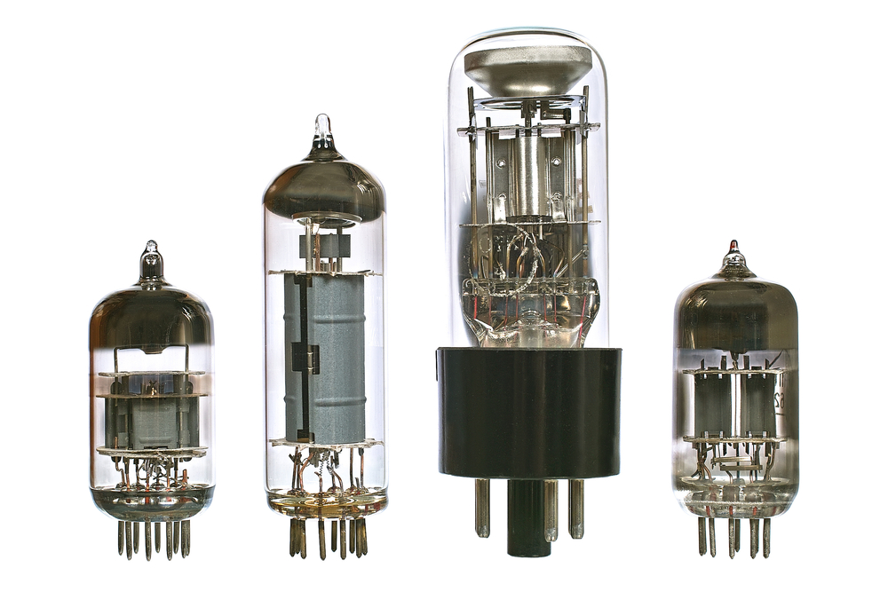

Integrated Circuit
Until the mid 1950s, computers used vacuum tubes to store and process information,
and they used large switches to make connections among tubes.

These components were large, and just one old computer could reach the size of
several double-decker buses. In the 1930s and 1940s, several scientists
worked on miniaturizing these circuits, but they couldn't figure out
how to produce the miniatures in large quantities. In 1958, however,
three engineers made breakthroughs
that changed modern life forever. Jack Kilby of Texas Instruments,
Kurt Lehovec of Sprague Electric Company, and Robert Noyce of Fairchild
Semiconductor (he later founded Intel) invented techniques that made mass
production of integrated circuits possible. The result of their work is
the modern
integrated circuit. An integrated circuit takes a complete circuit
from a computer — with all its many tubes and switches —
and recreates the whole thing microscopically on a piece of silicon.
As a result, computers could shrink to the size of a desktop.
http://www.explainthatstuff.com/integratedcircuits.html
Integrated Circuit (IC)
https://i1.wp.com/cdn4.explainthatstuff.com/integratedcircuitnasa.jpg